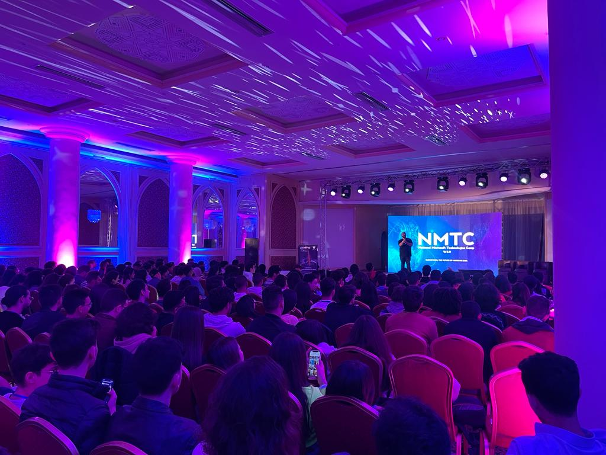

Le NMTC est un événement national organisé en collaboration entre tous les clubs Microsoft et la communauté MLSA en Tunisie.Cet événement se déroulera dans l'un des hôtels les plus distingués de Tunisie. Pendant trois jours, l'événement proposera des conférences, des ateliers et un concours de premier ordre conçus pour améliorer la pensée numérique et les compétences générales de nos participants et visiteurs.
